전자기기기능사 (2002-01-27 기출문제)
1과목: 전기전자공학
1. 도체에 전기를 주었을 때 전하는 어느 부분에 많이 모여 있는가?
- 도체의 중심에 모인다.
- 도체내에 균일하게 분포된다.
- 도체의 표면에 균일하게 분포되어 있다.
- 도체 표면의 뾰족한 부분에 많이 분포되어 있다.
(정답률: 59%)

2. 쵸크 입력형 평활회로에서 리플을 작게 하려면 어떻게 하여야 하는가?
- C와 L을 작게 한다.
- C와 L을 크게 한다.
- C를 크게하고 L을 작게 한다.
- C를 작게하고 L을 크게 한다.
(정답률: 70%)
3. 그림에서 VCE가 -4[V]일 때 IC는 -4mA, IB는 -40㎂이다. 이 때 IE는 몇 ㎃ 인가?
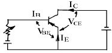
- 2.25
- 4.04
- 5.30
- 6.02
(정답률: 66%)
4. 트랜지스터를 활성영역에서 사용하고자 할 때 E-B 접합부와 C-B 접합부의 바이어스는 어떻게 공급하여야 하는가?
- E-B: 순바이어스, C-B: 역바이어스
- E-B: 순바이어스, C-B: 순바이어스
- E-B: 역바이어스, C-B: 순바이어스
- E-B: 역바이어스, C-B: 역바이어스
(정답률: 68%)
5. 그림과 같은 증폭회로에서 되먹임(feed back)이 있을 때의 전압증폭도 Af는? (단, Vf: 되먹임전압, Vo: 출력전압, β: 되먹임계수임)
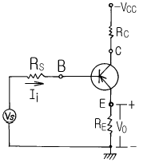
- Af≥1 / β=1
- Af>1 / β=1
- Af<1 / β=1
- Af=1 / β=1
(정답률: 53%)
6. 회로에서 TR의 VCE 가 0.1V로 포화될 때 β=40 이다. 입력에 전압 5V를 가할 때 RB 는 몇 kΩ 인가?
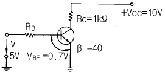
- 17.3
- 20.2
- 34.6
- 40.3
(정답률: 45%)
7. 그림은 UＪT에 의한 기본 발진회로이다. 발진주기 τ 는? (단, 읠는 스탠드 오후비이다.)(문제와 보기 내용이 정확하지 않습니다. 정확한 보기와 문제 내용을 아시는분께서는 오류신고를 통하여 작성 부탁 드립니다. 정답은 3번입니다.)
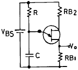
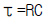
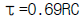
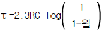
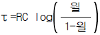
(정답률: 70%)
8. 그림과 같은 회로의 출력파형은?
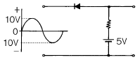
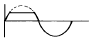
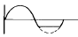
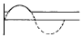
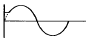
(정답률: 61%)
9. 그림과 같은 논리회로는 어떠한 논리동작을 하는가? (단, 정논리로 가정한다.)
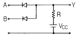
- AND
- OR
- NAND
- NOR
(정답률: 43%)
10. AM변조시에 과변조를 행하였을 때 일어나는 현상이 아닌 것은?
- 수신할 때에 검파출력이 일그러져 나타난다.
- 변조도는 1보다 커진다.
- 고조파가 많이 복사되게 된다.
- 점유 주파수대폭이 좁아진다.
(정답률: 52%)
11. 그림과 같은 회로에 대한 설명으로 옳은 것은?
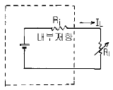
- 정전류원은 RL의 값에 따라 일정한 전류를 공급하는 전원이다.
- 정전류원이 되려면 RL>>Ri이다.
- 일반적으로 우리가 가지는 전압원은 정전압원이라기 보다는 정전류원이다.
- 이상적인 정전류원인 경우에는 내부저항 Ri=∞ 이다.
(정답률: 50%)
12. SCR의 설명으로 옳은 것은?
- 게이트전류로 출력전류를 제어할 수 있다.
- 게이트신호가 소멸하면 차단된다.
- 도통상태에서 전원전압을 감소하여 차단할 수 있다.
- 도통상태에서 양극전압을 반대로 하면 차단된다.
(정답률: 39%)
13. 반파정류회로에서 저항 r의 역할은?
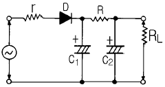
- 리플의 감소
- 필터 콘덴서의 보호
- 다이오드의 보호
- 전압변동의 감소
(정답률: 75%)
14. 진폭변조의 반송파 전력이 100㎾일 때 80%의 변조를 하면 피변조파의 소비전력은 몇 ㎾ 인가?
- 115
- 124
- 132
- 153
(정답률: 53%)
15. 플립플롭(FF)회로의 설명으로 틀린 것은?
- 비안정 멀티바이브레이터회로이다.
- 구형파 출력을 낸다.
- 직류결합으로 되어있다.
- 계수기회로에 쓰인다.
(정답률: 74%)
2과목: 전자계산기일반
16. 논리회로 중 Fan Out가 가장 큰 회로는?
- ECL 게이트
- TTL 게이트
- DTL 게이트
- RTL 게이트
(정답률: 38%)
17. 리플레시가 필요한 메모리는?
- D-RAM
- S-RAM
- CCD
- Shift-register
(정답률: 74%)
18. 1024 × 8bit의 용량을 가진 ROM에서 address bus와 data bus의 필요한 선로 수는?
- address bus=8선, data bus=8선
- address bus=8선, data bus=10선
- address bus=10선, data bus=8선
- address bus=1024선, data bus=8선
(정답률: 69%)
19. 다음 순서도에 사용되는 기호와 내용이 옳지 않은 것은?
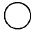
-연결기능- -판단기능
- -입ㆍ출력기능
- -시작, 끝기능
(정답률: 55%)
20. "마이크로프로세서의 기계어 명령 형식은 ( )와( )로 구성된다" ( )안에 알맞은 용어는?
- GRAY CODE, OPERAND
- BCD CODE, OPERAND
- OP CODE, OPERAND
- OP CODE, GRAY CODE
(정답률: 69%)
21. 16비트 어드레스 버스(address bus)를 갖는 마이크로 컴퓨터의 주기억장치 최대 용량은?
- 8 K
- 16 K
- 32 K
- 64 K
(정답률: 71%)
22. 코드에 오류가 발생하면 자체적으로 교정이 가능한 코드는?
- Gray 코드
- 비퀴너리 코드
- EBCDIC 코드
- 해밍 코드
(정답률: 69%)
23. 주기억장치의 용량을 보다 크게 사용하기 위한 것으로 하드디스크 장치의 용량을 주기억장치와 같이 사용할 수 있도록 한 메모리는?
- Flash Memory
- Virtual Memory
- Associate Memory
- Josephson Memory
(정답률: 66%)
24. 주기억장치의 속도를 중앙처리장치의 속도로 증가시키기 위해 개발된 기억장치는?
- 가상 기억장치
- 플로피 디스크 기억장치
- 하드 디스크 기억장치
- 캐시 기억장치
(정답률: 83%)
25. 드모르간(Demorgan) 법칙에서 (x＋y＋z)'의 결과는?
- xㆍyㆍz
- x＋y＋z
- x'ㆍy'ㆍz'
- x'+y'+z'
(정답률: 57%)
26. 정해진 데이터를 입력하여 원하는 출력 정보를 얻기 위하여 적용할 처리 방법과 순서를 설계하는 과정은?
- 문제 분석
- 입ㆍ출력 설계
- 순서도 작성
- 프로그램 코딩
(정답률: 76%)
27. 스택(stack)과 관계없는 것은?
- PUSH
- LIFO
- POP
- FIFO
(정답률: 69%)
28. 두 개의 2진수 11000010과 11000011의 AND 연산을 수행한 결과로 올바른 것은?
- 00111110
- 00111101
- 11000001
- 11000010
(정답률: 75%)
29. 피측정량과 일정한 관계가 있는 몇개의 서로 독립된 양을 측정하고, 그 결과로부터 계산에 의하여 피측정량을 구하는 방법은?
- 직접 측정법
- 간접 측정법
- 편위법
- 영위법
(정답률: 59%)
30. 오차의 종류 중 계통 오차에 속하지 않는 것은?
- 우연 오차
- 이론적 오차
- 기계적 오차
- 개인적 오차
(정답률: 50%)
3과목: 전자측정
31. 싱크로스코프로 직접 측정할 수 없는 것은?
- 주파수
- 위상
- 파형
- 회전수
(정답률: 73%)
32. DC 전용으로 쓰이면서 균등 눈금인 계기는?
- 회로시험기 전압계
- 가동코일형 전압계
- 정전형 전압계
- 회로시험기 저항계
(정답률: 32%)
33. 가동 코일형 계기의 특징 중 옳지 않은 것은?
- 소비 전력이 많다.
- 눈금은 평등 눈금이다.
- 감도가 대단히 우수하다.
- 직류 전용이므로 교류를 측정하려면 정류기를 삽입해야 한다.
(정답률: 48%)
34. 열전대 전류계를 높은 주파수에 사용시 일어나는 오차가 아닌 것은?
- 차폐 오차
- 공진 오차
- 배분 오차
- 표피 오차
(정답률: 32%)
35. 회전 자장이 원통 D와 쇄교하면 맴돌이 전류가 흐른다. 이 맴돌이 전류와 회전 자장 사이의 전자력에 의하여 알루미늄 원통에 구동 토크가 생기게 된다. 위 설명으로 보아 가장 알맞는 계기의 명칭은?
- 가동코일형 계기
- 전류력계형 계기
- 가동철편형 계기
- 유도형 계기
(정답률: 68%)
36. 헤테로다인 주파수계의 정밀도를 높이기 위하여 사용되는 교정용 발진기는?
- LC 발진기
- RC 발진기
- 펄스 발진기
- 수정 발진기
(정답률: 67%)
37. Wein Bridge는 무엇을 측정하는데 사용하는가?
- 정전용량
- 인덕턴스
- 임피던스
- 역률
(정답률: 51%)
38. 고감도 미소 전류계로서 미소한 전류의 유ㆍ무를 검출하거나 또는 영위법을 이용하는 브리지 회로의 검출기로 쓰이는 것은?
- 전위차계
- 전력계
- 검류계
- 배율계
(정답률: 46%)
39. 참값이 50[V]인 전압을 측정하였더니 51.4[V] 였다. 이 때의 오차 백분율은?
- 1.3[%]
- 1.4[%]
- 1.5[%]
- 2.8[%]
(정답률: 64%)
40. 레벨계 단위(㏈m)의 정의 중 옳은 것은?
- 1(W)를 0(㏈)로 하여 눈금을 정한 것
- 1(㎽)를 0(㏈)로 하여 눈금을 정한 것
- 1(W)를 1(㏈)로 하여 눈금을 정한 것
- 1(㎽)를 1(㏈)로 하여 눈금을 정한 것
(정답률: 44%)
41. 유전가열은 어떤 원리를 이용하여 가열하는 방식인가?
- 유전체손
- 표피작용에 의한 손실
- 히스테리시스 손
- 맴돌이 전류 손
(정답률: 57%)
42. 유도가열에서 가열 목적에 따라 피열물을 거의 균일한 온도로 가열하는 것은?
- 외부가열
- 표면가열
- 내부가열
- 표피가열
(정답률: 48%)
43. 초음파 측심기로 물의 깊이를 측정할 때 옳은 식은? (단, v : 초음파속도, t : 시간)
- h =(vt)/2
- h = vt
- h = 2vt
- h = 2/(vt)
(정답률: 74%)
44. 전자냉동은 다음 중 무슨 효과를 이용한 것인가?
- 제에백효과
- 톰슨효과
- 펠티어효과
- 주울효과
(정답률: 85%)
45. 반도체의 성질을 가지고 있는 물질(형광체를 포함)에 전장을 가하였을 때 생기는 현상을 무엇이라고 하는가?
- 광전효과
- 주울효과
- 전장발광
- 톰슨효과
(정답률: 77%)
4과목: 전자기기 및 음향영상기기
46. 신호변환 검출에서 다이아프램 조절기는 무엇을 변위시키는가?
- 전압
- 전류
- 압력
- 온도
(정답률: 53%)
47. 자동 온수기에서 서로 관계되지 않는 것은?
- 제어 대상-물
- 제어량-온도
- 조작량-물의 공급량
- 희망온도-목표값
(정답률: 61%)
48. 다음 그림에서 종합 전달 함수는 어떻게 표시되는가 ?
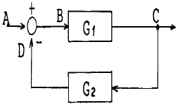
- G1ㆍG2
- G1+G2
- G1/(1+G1ㆍG2)
- (G1ㆍG2)/(G1+G2)
(정답률: 63%)
49. 아래 도면은 기상관측에 이용하는 라디오존데 방식 중 변조 주파수를 변화 방식에 사용하는 회로이다. 적당한 회로 명칭은?
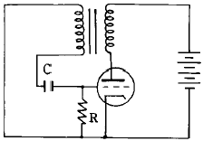
- 클리퍼 회로
- 클램핑 회로
- 중간 주파 증폭 회로
- 블록킹 발진기
(정답률: 39%)
50. 라디오 존데의 변환기 중 모발의 변화에 따라 발진주파수를 변화시키는 장치는 무엇을 측정할 때 사용되는가?
- 온도
- 습도
- 기압
- 풍력
(정답률: 45%)
51. 태양전지는 다음의 무슨 효과를 이용한 것인가?
- 광전자 방출효과
- 광전도 효과
- 광증폭 효과
- 광기전력 효과
(정답률: 77%)
52. 수신기에서 주파수 다이버시티(frequency diversity) 사용의 주된 목적은?
- 페이딩(fading) 방지
- 주파수 편이 방지
- S/N 저하방지
- 이득저하 방지
(정답률: 75%)
53. FM 검파 회로에서 레시오(ratio) 검파 회로가 사용되는 주된 이유는?
- 검파 출력 전압이 크므로
- 진폭제한 작용을 가지므로
- 동조가 간단하므로
- 출력 임피던스가 낮으므로
(정답률: 45%)
54. 수우퍼 헤테로다인 수신기에서 중간 주파 증폭을 하는 이유로 거리가 먼 것은?
- 전압 변동을 적게 하기 위해
- 선택도를 높이기 위해
- 충실도를 높이기 위해
- 안정한 증폭으로 이득을 높이기 위해
(정답률: 41%)
55. 녹음기 회로에서 전체의 주파수 특성을 평탄하게 하기 위하여 주파수 보상을 하게 되는데, 녹음시에는 어떤 주파수 특성을 보상하게 되는가?
- 고역 보상
- 저역 보상
- 중간 주파수 보상
- 잡음 보상
(정답률: 54%)
56. 자기 녹음기의 녹음 특성은 일반적으로 저역에서 저하되는 경향이 있다. 이 특성을 보상하기 위한 회로는?
- EQ Amp
- Tone Amp
- Main Amp
- parametric Amp
(정답률: 43%)
57. 정류회로에서 리플함유율을 줄이는 방법으로 가장 이상적인 것은?
- 반파 정류로 하고 필터콘덴서의 용량을 크게 한다.
- 브리지 정류로 하고 필터콘덴서의 용량을 줄인다.
- 브리지 정류로 하고 필터콘덴서의 용량을 크게 한다.
- 반파 정류로 하고 필터 초크코일의 인덕턴스를 줄인다.
(정답률: 58%)
58. 다이오드를 사용한 정류회로에서 과대한 부하 전류에 의하여 다이오드가 파손될 우려가 있을 경우, 이를 방지하기 위해서는 어떻게 해야 하는가?
- 다이오드를 병렬로 추가한다.
- 다이오드를 직렬로 추가한다.
- 다이오드 양단에 적당한 값의 저항을 추가한다.
- 다이오드 양단에 적당한 값의 콘덴서를 추가한다.
(정답률: 67%)
59. VHS 방식 VTR 테이프의 처음과 끝부분에 자성체가 없는 투명한 폴리에스테르 필름이 있는데, 이것의 용도는 무엇인가?
- 빛 센서에 의한 종단부 검출
- 자성체 유무에 의한 종단부 검출
- 장력에 의한 자동 리와인드 및 자동정지
- 처음과 끝부분의 육안 식별
(정답률: 54%)
60. 출력이 500W 인 송신기의 공중선에 5A 의 전류가 흐를 때 복사저항은?
- 10[Ω]
- 20[Ω]
- 30[Ω]
- 40[Ω]
(정답률: 58%)